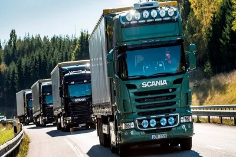
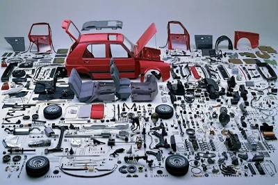
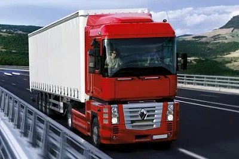

Номер: 274
Назва спеціальності:
Автомобільний транспорт



Бакалаври Під час навчання за спеціальністю 274 «Автомобільний
транспорт» майбутні фахівці набувають комплекс умінь та знань,
який дозволяє виконувати проектні, технологічні та управлінські
функції, що пов'язані із процесами розробки, випробування,
експлуатації, сертифікації нового транспортного устаткування,
автомобілів, дорожніх та інших транспортних машин. Під час
навчання вони формують фахові компетентності з: основ
машинобудування та експлуатації автомобілів; методів
конструювання, діагностування, обслуговування та ремонту типових
вузлів та механізмів автомобілів; комп'ютерного програмного
забезпечення для вирішення інженерних завдань в галузі транспорту;
роботи структур і служб підприємств автомобільного транспорту;
технологічного устаткування та методик, що застосовуються при
експлуатації та обслуговуванні автотранспортних засобів;
планування й здійснення технічного обслуговування та усунення
відмов автомобілів. Випускники спеціальності 274 «Автомобільний
транспорт» отримують навички розв’язання складних спеціалізованих
задач та практичних проблем під час професійної діяльності у
галузі транспорту та можуть працювати на автотранспортних,
автоексплуатаційних та авторемонтних підприємства всіх форм
власності; комунальних підприємствах, які займаються організацією
дорожнього руху в містах і регіонах України; підприємствах
автотранспортного напрямку обіймаючи посади: інженера з
транспорту, головного інженера автотранспортного підприємства,
інженера з організації експлуатації та ремонту автомобілів,
інженера з впровадження нової техніки й технологій, начальника
відділу організації безпеки дорожнього руху, начальника відділу
транспорту, начальника гаража, механіка з ремонту транспорту,
техніка-конструктора (механіка), техніка з підготовки технічної
документації та інших. Підготовка фахівців передбачає поглиблене
вивчення мов, постійну апробацію своїх знань та навичок на
конференціях, а також під час стажування та проходження виробничих
практик як на провідних підприємствах регіону так й підприємствах
Євросоюзу (за бажанням здобувача). Стабільно високий попит на
фахівців з транспорту на ринку праці надає фахівцям широкі
можливості для працевлаштування та побудови кар’єри й гарантує
високий рівень оплати праці! Магістри Спеціальність 274
«Автомобільний транспорт» - одна з найбільш популярних
спеціальностей технічного спрямування в галузі знань 27
«Транспорт», орієнтована на урахування сучасних вимог ринку праці
щодо підготовки висококваліфікованих фахівців у сфері виконання
проектно-конструкторської, дослідницької, управлінської, освітньої
й підприємницької діяльності з розробки, випробування,
експлуатації, сертифікації всіх видів транспорту й обладнання
автотранспортних підприємств. Під час навчання за спеціальністю
274 «Автомобільний транспорт» майбутні фахівці отримують
спеціальну поглиблену освіту в галузі транспорту та набувають
теоретичних й практичних знань, умінь, навичок та професійних
компетентностей, потрібних для розв’язання проблем та продукування
нових ідей в галузі експлуатації та сервісу автомобільного
транспорту; проведення теоретичних та практичних наукових
досліджень й формування первинних навичок педагогічної діяльності.
Програма підготовки забезпечує підвищення рівня знань, навичок та
компетентностей фахівців шляхом забезпечення міждисциплінарної та
багатопрофільної підготовки, яка враховує сучасні вимоги до
вирішення практичних питань та реалізується на основі аналізу та
застосування інформації щодо сучасних процесів розвитку технологій
та відносин суб’єктів в галузі транспорту й орієнтована на глибоку
спеціальну підготовку сучасних фахівців, які є ініціативними та
здатними до швидкої адаптації до умов та викликів сучасного
автотранспортного середовища. Підготовка фахівців передбачає
поглиблене вивчення мов, постійну апробацію своїх знань та навичок
на конференціях, а також під час стажування та проходження
виробничих практик на провідних підприємствах регіону. Програма
підготовки виконується в активному дослідницькому середовищі та
формує магістрів з автомобільного транспорту з новим перспективним
способом мислення, здатних не лише застосовувати існуючі методи
аналізу виробничих процесів, але й розробляти нові на базі
сучасних досягнень науки, техніки і технологій. Випускники
спеціальності 274 «Автомобільний транспорт» другого
«магістерського» рівня освіти отримують теоретичні й практичні
навички розв’язання складних спеціалізованих задач та практичних
проблем під час професійної діяльності у галузі транспорту та
можуть працювати на автотранспортних, автоексплуатаційних та
авторемонтних підприємства всіх форм власності; комунальних
підприємствах, які займаються організацією дорожнього руху в
містах і регіонах України; науково-дослідних організаціях й
підприємствах автотранспортного напрямку, вищих навчальних
закладах технічного спрямування ІІ-го рівня акредитації та
коледжах обіймаючи посади: інженера з транспорту, головного
інженера автотранспортного підприємства, директора (керівника)
малого транспортного підприємства, директора з транспорту,
аналітика комунікацій, технічного експерта з промислової безпеки,
начальника відділу транспорту, начальника гаража, завідувач
(начальника) відділу (науково-дослідного, конструкторського,
проектного та ін.), завідувача відділення у коледжі, завідувача
лабораторії (науково-дослідної, підготовки виробництва), викладача
професійно-технічного навчального закладу тощо. Підготовка
фахівців передбачає поглиблене вивчення мов, постійну апробацію
своїх знань та навичок на конференціях, а також під час стажування
та виконання кваліфікаційних робіт за замовленнями провідних
підприємств регіону. Стабільно високий попит на фахівців з
транспорту на ринку праці надає фахівцям широкі можливості для
працевлаштування та побудови кар’єри й гарантує високий рівень
оплати праці!